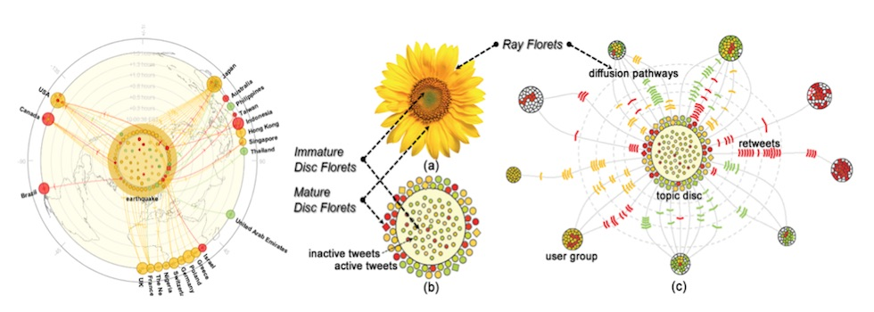
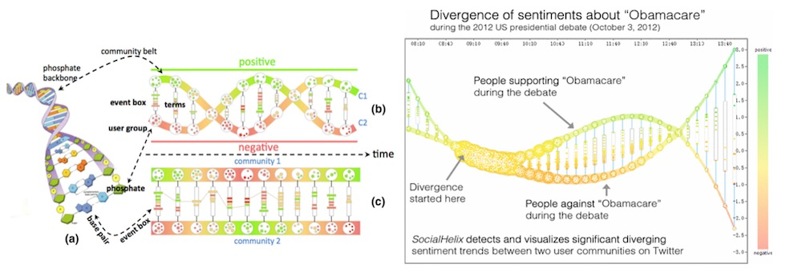
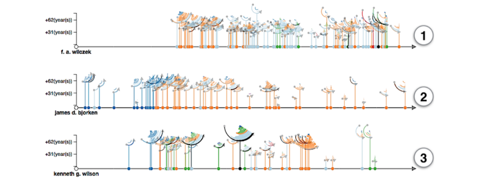
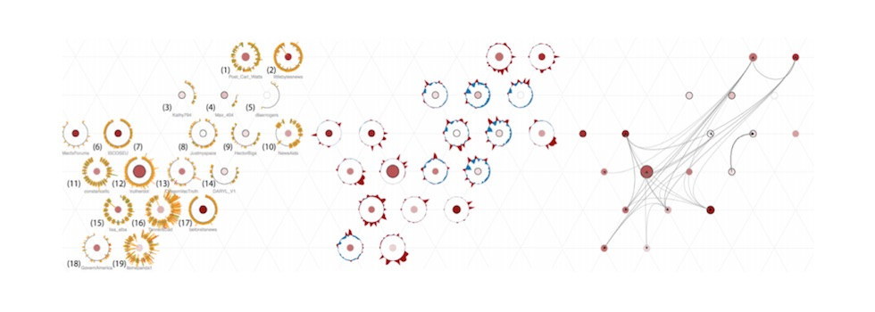

智能大数据可视化实验室
Intelligent Big Data Visualization Lab (iDVx)
- 
- 
")
- 
- 
SELECTED PAPERS
2016

ACM SIGGRAPH Asia 2016
VideoForest: Interactive Visual Summarization of Video Streams Based on Danmu Data, Zhida Sun, Mingfei Sun, Nan Cao, Xiaojuan Ma
ACM CSCW 2017
Video-based Evanescent, Anonymous, Asynchronous Social Interaction: Motivation and Adaption to Medium, Xiaojuan Ma, Nan Cao.

InfoVis 2016
Evaluation of Graph Sampling: A Visualization Perspective, Yanhong Wu, Nan Cao, Daniel Archambault, Huamin Qu, Weiwei Cui.
ChinaVis 2016
Focus+Context Grouping for Animated Transitions, Yixian Zheng, Wenchao Wu,Shun Sun, Nan Cao, Huamin Qu.

PasificVis 2016
Interactive Visual Co-Cluster Analysis of Bipartite Graphs, Panpan Xu, Nan Cao, John Stasko, Huamin Qu.
ACM IUI 2016
Adaptive Contextualization: Combating Bias During High-Dimensional Visualization and Data Selection (Best Paper), David Gotz, Shun Sun, Nan Cao.
2015
IEEE Transaction on Visualization and Computer Graphics (VAST'15)
TargetVue : Visual Analysis of Anomalous User Behaviors in Online Communication Systems, Nan Cao, Conglei Shi, Sabrina Lin, Jie Lu, Yu-Ru Lin, Ching-Yung Lin

IEEE Computer Graphics and Applications
Episogram: Visual Summarization of Egocentric Social Interactions, Nan Cao，Yu-Ru Lin, Fan Du, Dashun Wang.
IUI 2015
MindMiner: Quantifying Entity Similarity via Interactive Distance Metric Learning (demo paper), Xiangmin Fan, Youming Liu, Nan Cao, Jason Hong, Jingtao Wang.

ACM CHI 2015
g-Miner: Interactive Visual Group Mining on Multivariate Graphs,Nan Cao, Yu-Ru Lin, Liangyue Li, HangHang Tong.
WWW 2015
Replacing the Irreplaceable: Fast Algorithms for Team Member Recommendation, Liangyue Li, HangHang Tong, Nan Cao, Kate Ehrlich, Yu-Ru Lin and Norbou Buchler.
ACM CHI 2015
Trajectory Bundling for Animated Transitions, Fan Du, Nan Cao, Nan Cao, Jian Zhao, Yu-Ru Lin.
Journal of Visualization, May 2015, Volume 18, Issue 2, pp 221-235
SocialHelix: Visual Analysis of Sentiment Divergence in Social Media, Nan Cao, Lu Lu, Yu-Ru Lin, Fei Wang, Zhen Wen.
2014
ICDM 2014
UnTangle: Visual Mining for Data with Uncertain Multi-labels via Triangle Map, Nan Cao, David Gotz, and Lu Lu

VAST 2014 (Honorable Mention)
FluxFlow: Visual Analysis of Anomalous Information Spreading on Social Media, Jian Zhao, Nan Cao， Zhen Wen, Yale Song, Yu-Ru Lin and Christopher Collins.

PaKDD 2014
MVisual Analysis of Uncertainty in Trajectories, Lu Lu, Nan Cao, Siyuan Liu, Lionel Ni, Xiaoru Yuan, and Huamin Qu.
2013

EuroVis 2013
Visual Analysis of Set Relations in a Graph, Computer Graphics Forum, Panpan Xu, Fan Du, Nan Cao, Conglei Shi, Hong Zhou, and Huamin Q.
2012

InfoVis 2012
Whisper: Tracing the Spatiotemporal Process of Information Diffusion in Real Time, Nan Cao, Yu-Ru Lin, Xiaohua Sun, David Lazer, Shixia Liu, and Huamin Qu
2011
ICDM 2011
SolarMap: Multifaceted Visual Analytics for Topic Exploration, Nan Cao, David Gotz, Jimeng Sun, Yu-Ru Lin, and Huamin Qu

InfoVis 2011
DICON : Interactive Visual Analysis of Multidimensional Clusters, Nan Cao，David Gotz, Jimeng Sun, and Huamin Qu.
paper | video | ppt | online demo
IEEE/WIC/ACM International Conference on Web Intelligence 2011
Visual Analysis of the Impact of Online News, Wei Wei, Nan Cao, Jon Atle Gulla, and Huamin Qu.
2010
InfoVis 2010
FacetAtlas: Multifacet Visualization for Rich Text Corpora, Nan Cao, Jimeng Sun, Yu-Ru Lin, David Gotz, Shixia Liu, and Huamin Qu, and Huamin Qu

SDM 2010
ContexTour: Contextual Contour Visual Analysis on Dynamic Multi-Relational Clustering, Yu-Ru Lin, Jimeng Sun, Nan Cao，and Shixia Liu.
before 2010
ICDE 2009
SmallBlue: Social Network Analysis for Expertise Search and Collective Intelligence, Ching-Yung Lin, Nan Cao, Shixia Liu, Spiros Papadimitriou, Jimeng Sun, and Xifeng Yan

PacificVis 2009
HiMap: Adaptive visualization of large-scale online social networks, Lei Shi, Nan Cao，Shixia Liu, Weihong Qian, Li Tan, Guodong Wang, Jimeng Sun, and Ching-Yung Lin.

SDM 2009
Content-based Social Network Exploration Through Multi-way Visual Analysis, Jimeng Sun, Spiros Papadimitriou, Ching-Yung Lin, Nan Cao, Shixia Liu, and Weihong Qian

IEEE PacificVis 2008
Interactive Visual Analysis of the NSF Funding Information, Shixia Liu, Nan Cao，and Hao Lv.

HCHI 2006
Peony : A Light Weighted Interactive InfoVis Toolkit, Nan Cao, Shixia Liu, and Hui Su
Selected Poster & Workshop Papers

IEEE Information Visualization, Poster, 2013
VVisualizing Sentiment Divergence Dynamics in Social Media Through SocialHelix, Lulu, Nan Cao, Zhen Wen, Fei Wang, Yu-Ru Lin, Huamin Qu
IEEE Information Visualization, Poster, 2013
Interactive Multi-resolution Exploration of Million Node Graphs, Zhiyuan Lin, Nan Cao, Hanghang Tong, Fei Wang, U Kang, Duen Horng Chau.
IEEE Information Visualization, Poster, 2013
GapFlow: Visualizing Gaps in Care for Medical Treatment Plans, David Gotz, Nan Cao, Esther Goldbraich, Boaz Carmeli.
IEEE InfoVis 2011
ChronAtlas: A Visualization for Dynamic Topic Exploration, Nan Cao, Yu-Ru Lin, David Gotz, Jimeng Sun, and Huamin Qu.

AMIA 2010
A Visualization Tool for Navigation of Online Disease Literature, Jimeng Sun, David Gotz, Nan Cao.
IUI 2010
HARVEST: An Intelligent Visual Analytic Tool for the Masses. Proceedings of the First International Workshop on Intelligent Visual Interfaces for Text Analysis, David Gotz, Zhen Wen, Jie Lu, Peter Kissa, Nan Cao, JWei Hong Qian, Shi Xia Liu, Michelle X. Zhou.

IEEE InfoVis 2008, Poster
Context-Preserving Dynamic Graph Visualization, Nan Cao, Shixia Liu, Li Tan, and Michelle X Zhou.
IEEE InfoVis 2008, Poster
Peony: An integrated InfoVis design and development platform, Nan Cao, Shixia Liu, and Tianshu Wang.

IEEE Infovis 2007, Poster
Trammel Map: Providing a Clear View of the Enterprise Social Network, Nan Cao, Paul Moody, and Tianshu wang.
SELECTED PARENTS
- YOR920110279US1 Visual Analysis of Multidimensional Clusters, Nan Cao, David Gotz, Jimeng Sun
- YOR920110137US1 Multifaceted Visualization of Topic Exploration, Nan Cao, Jimeng Sun, David Gotz
- YOR920100438US1 Method and system for visualizing multi-facet information. Nan Cao, Jimeng Sun, David Gotz
- 200910211313.0 A method of visually analyzing social communities based on their content. Nan Cao, Jimeng Sun, Weihong Qian, Shixia Liu
- 200910136964.8 An adaptive stabilized layout method for disconnected dynamic networks. Nan Cao , Li, Tan, Shixia Liu, Michelle X Zhou
- 200910136970.3 The method of animation planning for the multi-stage transition in a dynamic graph series. Nan Cao , Li, Tan, Shixia Liu, Michelle X Zhou
- 200910005432.0 Method and System of Extended Shortcut Key Mechanism to support fast mobile browsing. Weixiong Shang, Wei Li, Yixin Zhao and Nan Cao
- 200810149341.X The method of animated transition between dynamic graph series. Nan Cao , Li, Tan, Shixia Liu, Michelle X Zhou.
- 200810212645.6 A method of automatically identifying similar sub-graph candidates in huge networks. Weihong Qian, Shixia Liu, Nan Cao
- 200810096094.1 The method for providing a clear moving track in the animated transition between related data graphics. Nan Cao , Shixia Liu, Tianshu Wang
- 200810108432.9 A method of visualizing huge amount of information on a sphere. Nan Cao , ShengYi Wang, Shixia Liu
- 200810109803.5 An interactive method to generate personal and maintain personal bookmarks. Shixia Liu, Nan Cao , Xinghua Lou, Tianshu Wang, Weijia Cai
- 200710160532.1 Sunburst Graph: A new method for visualizing and exploring large hierarchy graph. Nan Cao , Shixia Liu, Tianshu Wang .
- 200710107720.8 A method of generating 3D Carousel tree view. Nan Cao , Shixia Liu, Hui Su
- CN8-2005-0301: An approach to tree visualization with nodes cascading, Hao Lv, Shixia Liu, Martin Wattenberg, Xijun Ma and Nan Cao
- 12/367132 Method and Apparatus for intelligent exploratory visualization and Analysis. David Gotz, Zhen Wen, Jie Lu, Nan Cao, Weihong Qian, Michelle X Zhou, Shixia Liu
- More than 10 pushlished innovation disclosures.